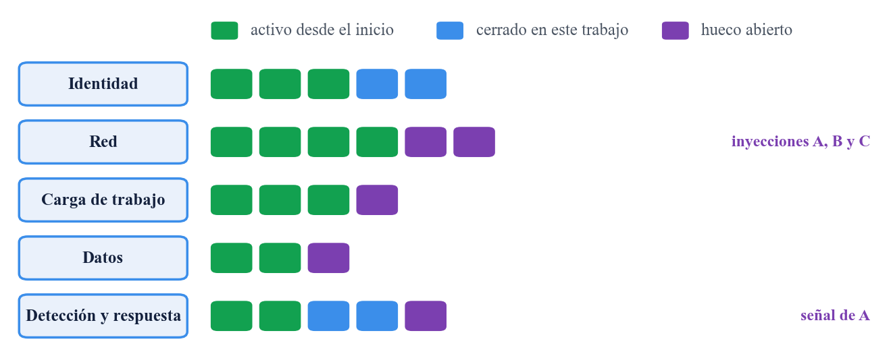

Sección del informe de seguridad (defensa en profundidad) · API StatsNostra en GKE
| Ronda 0, sin mejoras sin alerta El Service expuesto no avisó a nadie. El salto entre namespaces y la salida a Internet pasaron. |
Ronda 1, alerta y NetworkPolicy 45 s hasta la alerta; 15 s después se contuvo. Salto y salida, bloqueados. |
Credencial señuelo 27 s desde que alguien abre el secreto hasta que suena la alerta. |
Hipótesis de control. Con la red tal como está hoy, cuando se cree un Service que exponga el puerto de administración, esperamos una alerta en 5 minutos o menos y su eliminación en 10 minutos o menos. Se inyectan tres rutas no declaradas a la vez: (A) el Service expuesto, (B) un pod de otro namespace que llama a la API y (C) un pod que sale a Internet sin filtro.
Reglas de compromiso aceptadas por las tres APIs: solo cuentas del grupo y datos sintéticos; radio de un Service de prueba, un namespace de prueba y una NetworkPolicy; parada y reversión con tres comandos de kubectl, probados antes de la ronda 0; aborto si /health/ready no responde 200 durante más de 60 s. Las 27 acciones quedaron en la bitácora.
El inventario de controles cuenta 18 activos y 5 huecos abiertos en cinco capas; 4 se activaron durante este trabajo. La línea base de la señal: el evento de creación de un Service se pudo consultar en Cloud Logging a los 28 s.

| Ronda 0, sin mejoras | Ronda 1, alerta y NetworkPolicy | |
|---|---|---|
| MTTD (de la creación a la alerta) | no se detectó | 45 s |
| MTTC (de la alerta a la contención) | sin alerta no hubo quién contuviera | 15 s |
| B: salto este-oeste | pasó (HTTP 200) | bloqueado |
| C: salida a Internet | pasó (HTTP 200) | bloqueada |
| Cobertura de la alerta | 0 de 3 | 1 de 3 (la A) |
| Falsos positivos | sin alerta que pudiera darlos | 0 |
| Hipótesis | se refuta: no hay alerta | se cumple |
En la ronda 0 la contención a los 28 s la hizo quien operaba el experimento, que ya sabía del evento; no cuenta como MTTC. El NodePort quedó sin respuesta desde fuera de la red en las dos rondas, porque el firewall solo deja pasar el puerto 80 al balanceador. Con las políticas puestas, el flujo completo siguió dando 200.
Alerta de Services expuestos sobre el registro de auditoría de Kubernetes, con la notificación en Pub/Sub para leer la hora real. NetworkPolicy de denegación por defecto de entrada y salida, con entrada solo al puerto de la API y salida solo a DNS, metadatos, la API de Cloud SQL y la base. Las reglas de detección son código versionado, con 3 casos positivos y 9 negativos que corren en cada push.
Credencial señuelo: un secreto que nadie usa; abrirlo avisó a los 27 s y mirar sus metadatos no avisó (MITRE D3FEND D3-DUC y ATT&CK T1552, consultados el 15 de noviembre de 2026). Mínimo privilegio: la cuenta que despliega pasó de 18 a 7 roles y de 9 a 1 de administración, probando cada operación del despliegue con su identidad (guía de prácticas recomendadas para cuentas de servicio de Google Cloud, consultada el 15 de noviembre de 2026).
Riesgos y pendientes. La alerta cubre una de las tres rutas: la B y la C se previenen pero no dejan señal propia, y falta una alerta sobre los flujos de red denegados. Los resultados son de una sola ejecución por ronda. La NetworkPolicy se revirtió al terminar el experimento y no quedó permanente (el 17 de noviembre bloqueó conexiones nuevas de los pods a la base y a Grafana; causa probable sin confirmar: falta permitir el DNS local). Habilitar los registros de lectura de Secret Manager suma volumen de logs.
Informe completo de StatsNostra: seguridad/informe/informe-seguridad-statsnostra.pdf. Evidencia: seguridad/evidencia/.